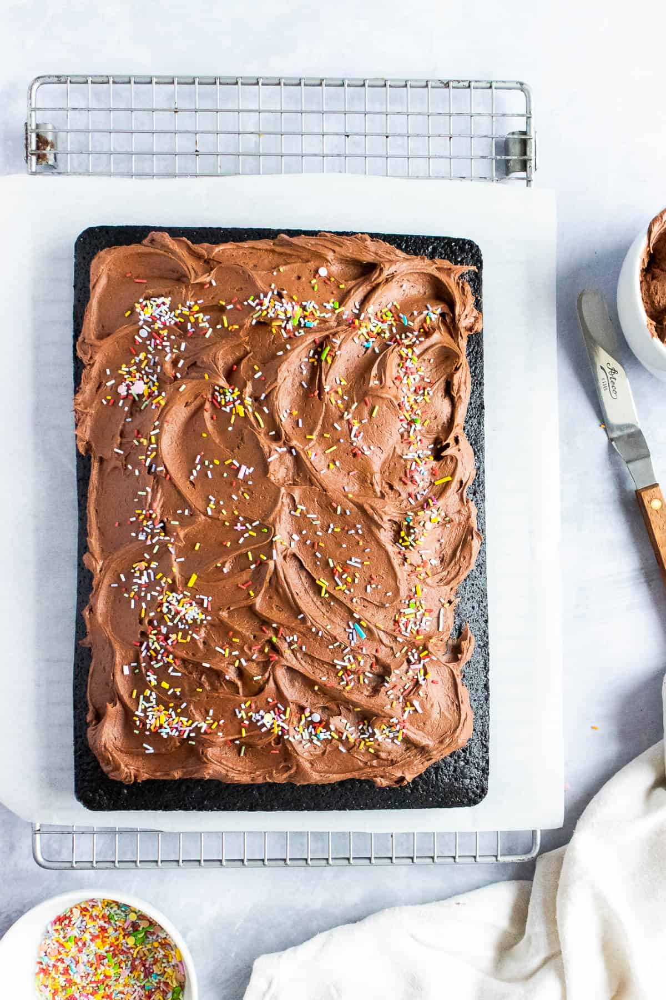

Chocolate Tray Bake Cake

This is a lovely moist chocolate birthday cake for kids big and small.
Ingredients
For the Sheet Cake
- 250 g Plain Flour or All Purpose Flour
- 2 tsp Baking Powder
- 325 g Light Soft Brown Sugar
- 185 ml Vegetable Oil
- 250 ml Buttermilk
- 100 ml Espresso Coffee Made to your preferred strength with espresso coffee powder, Optional
- 2 tsp Vanilla Extract
- 2 Eggs Medium
For the Buttercream
- 125 g Butter
- 250 g Icing Sugar or Powdered Sugar
- 50 g Cocoa Powder
- 2 tbsp Whole Milk
Instructions
To make the sheet cake
- Preheat oven to 180C/350F and line a 13x9 inch sheet pan with baking paper.
- In a large bowl, sieve together the flour, baking powder and cocoa powder. Mix together until well combined.
- Add the sugar to the flour mixture and mix until well-combined.
- Using a stand mixer with the balloon whisk attachment, whisk the oil and eggs until pale in colour and frothy. Alternatively, you can whisk in a large mixing bowl, by hand or with an electric hand whisk.
- Add the buttermilk and vanilla extract into the oil mixture and whisk well. Add the Espresso coffee and whisk again.
- Make a well in the centre of the dry ingredients, and pour in the oil mixture. Use a rubber spatula to fold the ingredients together. Mix well to ensure all the ingredients are well combined.
- Pour the cake batter into the lined sheet pan, and level if required.
- Bake for 25-30 minutes until springy to touch and skewer inserted comes out clean. Allow the cake to cool in the tin for 10 minutes, then turn out onto a wire rack to cool.
To make the buttercream
- In a large bowl or stand mixer, beat the butter until soft. Add the half the icing sugar, cocoa powder and milk, then beat together.
- Add the remaining icing sugar, cocoa powder and milk. Beat until smooth. If the frosting is too stiff, add a tbsp of whole milk and mix.
To assemble the cake
- If transporting the cake you can ice in the pan. Spoon the frosting over the top of the cake.
- Using a palette knife, spread the buttercream evenly across the cake, and add swirls for texture if you prefer. Sprinkle all over with sprinkles.
Bring it to the party and cut into squares for everyone to enjoy!
Home